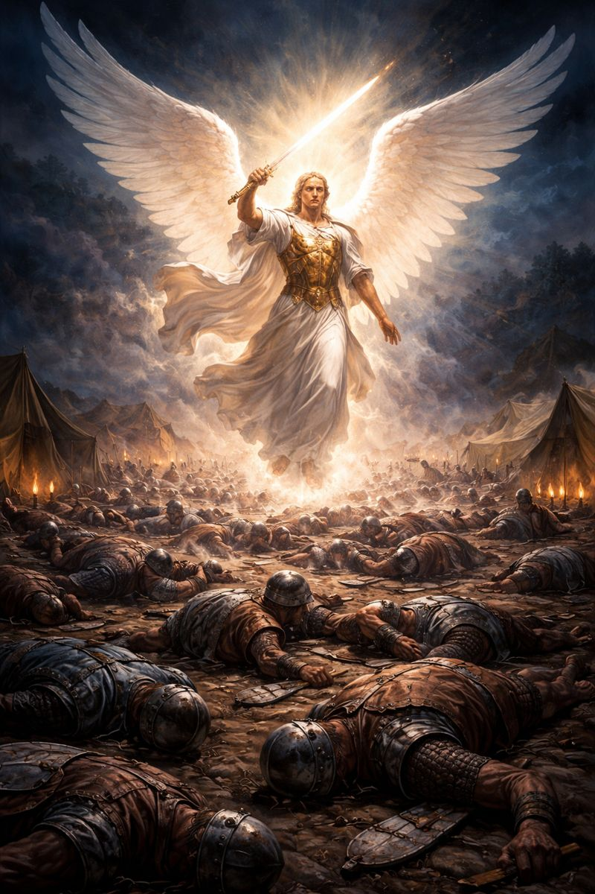

Modern Christianity loves a tame God. A God who comforts, affirms, and never disrupts. A God who exists to improve our moods and bless our plans. But Scripture presents a very different reality—one that most churches quietly avoid.

In 2 Kings 19, the Assyrian Empire surrounded Jerusalem. This was not a small threat. Assyria was the most powerful military force on earth at the time. They had already crushed nations, erased cities, and mocked the God of Israel openly. Their king, Sennacherib, didn’t just threaten Israel—he insulted God Himself, treating Him as no different than the defeated gods of other nations.
Israel did not fight back with weapons. King Hezekiah went to the temple and prayed.
And God responded—not with negotiations, not with compromise, not with diplomacy.
That night, Scripture says one angel of the Lord went out and struck down 185,000 soldiers in the Assyrian camp.
Not an army of angels.
Not a prolonged battle.
Not a warning shot.
One angel. One night. Total devastation.
By morning, the most feared army on earth was nothing but corpses.
This story is uncomfortable for modern believers because it exposes how small our view of God has become. We talk endlessly about His love—and rightly so—but we rarely acknowledge His power, His authority, or His holiness. The same God who forgives sins also commands angels. The same God who heals the broken also dismantles empires.
And notice this: God didn’t act when Israel was strong. He acted when they were helpless. No swords were lifted. No strategies were deployed. God alone defended His name.
This wasn’t random violence. It was judgment. It was restraint finally removed after arrogance, blasphemy, and defiance. It was God making it clear that no empire, ideology, or military force exists beyond His reach.
If one angel can erase 185,000 soldiers in a single night, then the real question isn’t whether God is powerful.
The question is whether we’ve forgotten who He is.
We say we want revival.
We say we want God to move.
But Scripture shows that when God moves, it is not always gentle—it is holy.
And holiness should still terrify us.
Because the God of the Bible is not safe.
But, He is good.